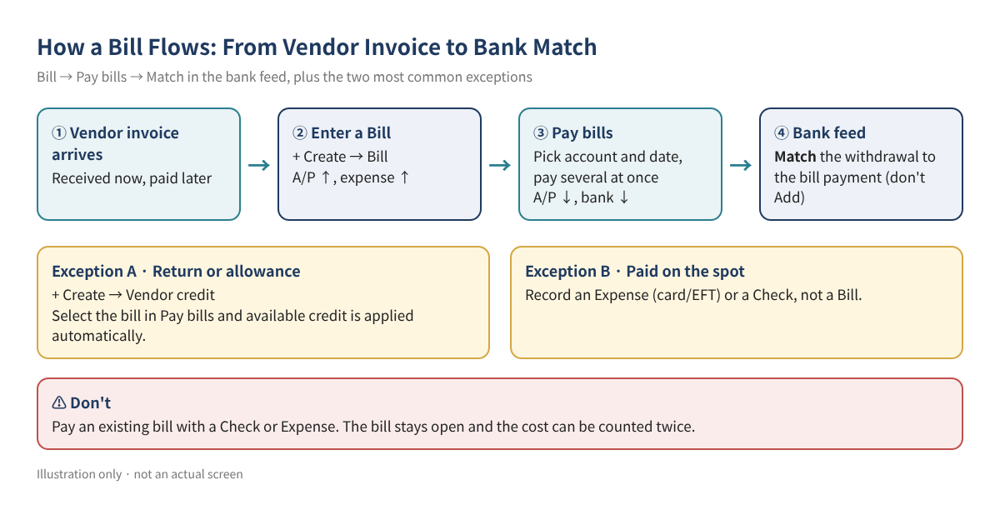
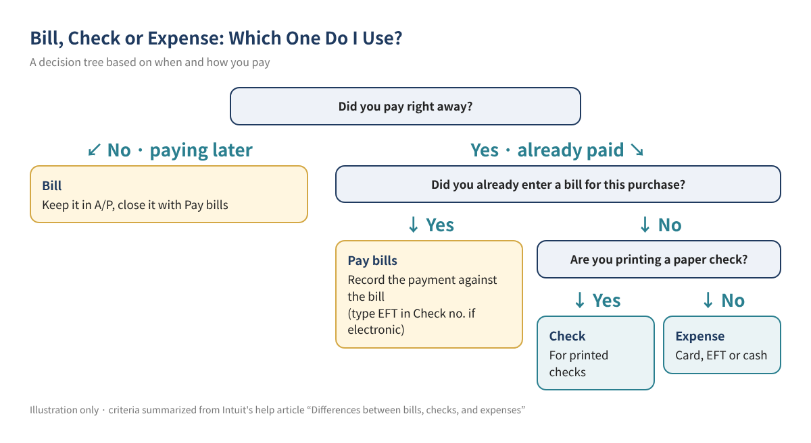
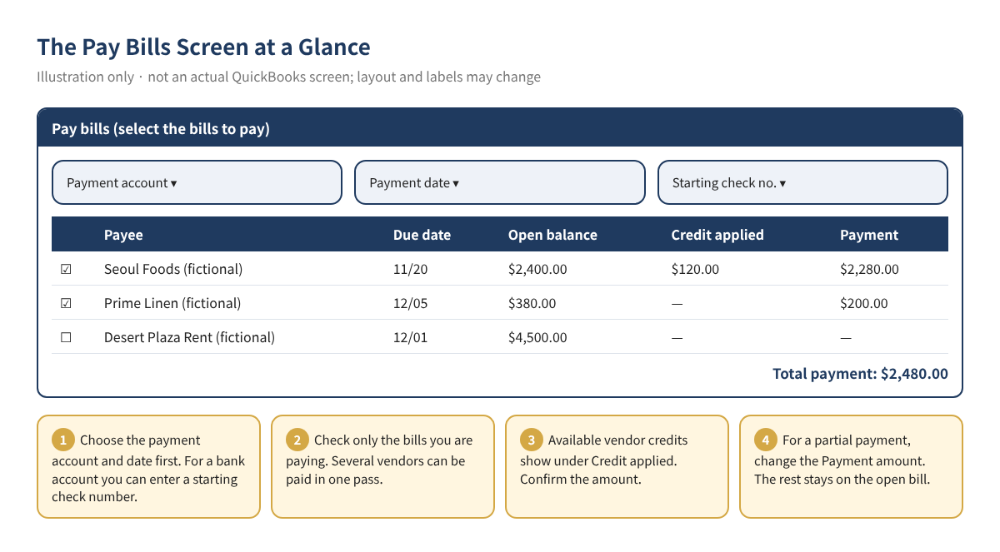
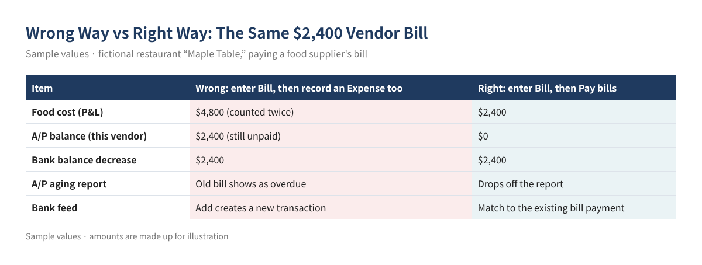

Why Accounts Payable Gets Messy in QuickBooks Online: Enter Bills, Pay Them in Batches, Apply Vendor Credits and Track What You Owe
Many small businesses receive goods now and pay the supplier two weeks or a month later. If those purchases only show up in your books when the money leaves the bank, you cannot tell from QuickBooks how much you owe each vendor or which invoices are past due. The opposite mistake is just as common: you enter a bill, then record the payment as a separate Expense or Check. The cost is counted twice and the bill still looks unpaid.
This guide walks through the core accounts payable (A/P) flow in QuickBooks Online (QBO): enter a Bill → record it with Pay bills → Match it in the bank feed. It also covers paying several bills at once, partial payments, returns and allowances with vendor credits, recurring bills, and the reports that show what you owe each vendor. It expands on the expense section of the series starter, QuickBooks Online Basics for Beginners, and is the payables counterpart to Partial Payments, Discounts, Refunds and Credits, which covered receivables (A/R).
Who this is for ☐ You buy inventory, food or supplies on terms and pay later ☐ You want to see your balance with each vendor at a glance ☐ Bills you already paid still show as open ☐ You are not sure how to record a return or a supplier discount ☐ You retype the same rent or lease bill every month
1. Bills, Checks and Expenses: What Is the Difference?
Intuit's help article explains the difference in terms of timing. Use a bill when you receive goods or services now and pay later. Use a check or expense when nothing is owed after the purchase because you paid right away. Choose a check when you need to print one for the vendor, and an expense when you paid by credit card or EFT.
| Transaction | When to use it | What it records (summary) |
|---|---|---|
| Bill | You received an invoice but have not paid yet | Expense plus an increase in Accounts Payable; stays open until closed with Pay bills |
| Pay bills (bill payment) | You pay a bill you already entered | A/P goes down; bank (or card) balance goes down |
| Check | Paid immediately with a printed check | Expense and payment together; no A/P balance |
| Expense | Paid immediately by card, EFT or cash | Expense and payment together; no A/P balance |
| Vendor credit | Return, allowance or billing correction | Reduces what you owe that vendor; applied in Pay bills |
The key rule Intuit's help is explicit: do not use a Check or Expense to pay an existing bill. The bill can stay open and the vendor balance will not go down. Close every bill you entered with Pay bills.

You do not have to use bills. If you have only a few vendors and pay most of them by card on the spot, expenses may be enough. But if you buy a lot on terms, have paid late fees after missing a due date, or your accountant wants accrual-basis reports, bills make life easier. Intuit describes bills as the tool for tracking what you owe specific vendors in A/P.

2. Before You Start: Plan and Settings
Check your plan
Intuit's Simple Start page says Essentials adds the ability to manage bills (and track time) on top of Simple Start, and the Essentials page lists bill status tracking, recurring payments and paying multiple vendors at once as Essentials features. The pricing comparison page describes bill pay features differently for some plans, so the two pages do not read exactly the same. Check whether Bill and Pay bills appear under + Create in your own company. Plan features and prices change often, so this guide does not quote them.
Set up vendors and accounts
- Add your vendors first. To load them in bulk, see Import Customers, Vendors and Products from Excel.
- Make sure your expense accounts (food cost, rent, repairs and so on) exist in the Chart of Accounts. See Chart of Accounts Examples by Industry.
- To record purchases by product, turn on the Items table. Per Intuit's help: Settings ⚙ → Account and settings → Expenses, select the pencil icon in Bills and expenses, and turn on Show Items table on expense and purchase forms.
- If you had unpaid vendor invoices when you started QBO, entering those pre-start bills one by one keeps each vendor balance accurate. See Opening Balances and Chart of Accounts Setup and Clean Up Opening Balance Equity.
3. Enter a Bill, Step by Step
- Select + Create (or + New) → Bill. If your menu looks different, type "bill" in the search bar. The bills list is under All apps → Expenses & Bills → Bills.
- Choose the Vendor.
- Pick the Terms. Net 15, for example, means payment is due in 15 days and sets the due date.
- Enter the Bill date, Due date and Bill no. exactly as they appear on the vendor's invoice. An accurate bill number makes duplicates easy to spot.
- Under Category details, enter the expense account and amount. Use Item details if you track products.
- If you will rebill the cost to a customer, mark it Billable and pick the Customer (the related setting must be on).
- Attach the vendor's PDF or photo and select Save and close.
Tip Intuit's help also describes creating a bill by uploading the vendor's file (PDF, JPG, PNG and similar). If you use it, double-check the vendor, amount and dates it reads. Receipt capture on your phone is covered in post 9 of this series.
4. Pay Several Bills at Once with Pay Bills
The Pay bills screen lets you select bills from several vendors and record all the payments in one pass.
- Select + Create → Pay bills (or go through Expenses & Pay Bills from the dashboard).
- Choose the Payment account the money came from. For a checking or savings account you can enter the Starting check no. If you paid by credit card, choose that card account.
- Set the Payment date to the actual withdrawal date so the bank feed lines up.
- Check only the bills you are paying now.
- For a partial payment, change the amount in the Payment column. The rest stays on the open bill.
- If a vendor credit is available, confirm the Credit applied amount, then save.
Electronic payments Intuit's help says to type "EFT" in the Check no. field when you paid electronically rather than by check. It keeps those payments separate from real check numbers.

Match, don't Add, in the bank feed
When the withdrawal comes through the bank feed, use Match to link it to the bill payment you recorded, not Add. Add creates the same cost a second time. Intuit says payments made through QuickBooks Bill Pay match automatically once they clear. For more on the bank feed, see QBO Bank Feeds: Match, Add and Rules.
If you use QuickBooks Bill Pay
QuickBooks Bill Pay sends the money for you (for example by ACH or check). Intuit's help shows scheduling a payment from the Action column on the Unpaid tab and notes that, depending on your Bill Pay subscription level, extra approval steps may apply. Free allowances, monthly limits and per-payment fees are set out in footnotes on Intuit's pricing page and can change, so check the current terms before you rely on them. If you pay through your bank's website instead, the Pay bills record described above is all you need.
5. Returns, Allowances and Refunds: Vendor Credits
Use a vendor credit when a supplier accepts a return, lowers what they billed, or sends money back. Here is how Intuit's help handles each case.
| Situation | How to record it | What to check |
|---|---|---|
| Supplier reduces an unpaid bill | + Create → Vendor credit, then select that bill in Pay bills | Available credit is applied automatically; confirm Credit applied |
| Refund check for a bill you already paid | Vendor credit → Bank deposit (account: Accounts Payable) → select the deposit in Pay bills | Total payment should be $0.00 |
| Refund of an expense or check (no bill) | + Create → Bank deposit, using the original expense account | Pick the vendor in Received From |
| Refund to your credit card | + Create → Credit card credit, using the original expense account | Agrees with the card statement |
Watch the account Use the same expense account on the vendor credit as on the original bill. A different account leaves one expense line overstated and another understated. For returned inventory, Intuit says the items go back into inventory, and defective goods may need an inventory adjustment (inventory is covered in post 20 of this series).
6. Make Repeating Bills Recurring
Rent, equipment leases and regular service fees are good candidates for a recurring template, so nothing gets missed. Intuit's steps:
- Create a new bill or open an existing one.
- Select Make recurring at the bottom.
- Name the template and choose a Type (see the table below).
- Set how many days in advance to create it, the Interval, the start date and the end condition, then select Save template.
You can edit or pause templates later from All apps → Accounting → Recurring transactions.
| Type | What it does (Intuit's help, summarized) | Good fit |
|---|---|---|
| Scheduled | Creates the bill automatically on the schedule | Rent that is the same every month |
| Reminder | Reminds you; you review, edit and create it | Utilities that vary a little |
| Unscheduled | No schedule; use it from the list when needed | A repair vendor you call now and then |
Tip A Scheduled template for a bill whose amount changes, such as utilities, will post amounts that do not match the real invoice. Use Reminder for those. For costs that should be spread over several months, such as a prepaid annual insurance premium, see Prepaid Expense Amortization.
7. How Much Do You Owe Each Vendor? A/P Reports
Intuit's year-end guide says to check vendor balances under Reports → Standard reports with Accounts payable aging summary or Accounts payable aging detail, and notes these reports are available in Essentials, Plus and Advanced. The columns mean:
| Column | Meaning (Intuit's help, summarized) | Sample values (Maple Table below, as of Dec 3) |
|---|---|---|
| Current | Not yet due | $180.00 (Prime Linen, due 12/05) |
| 1-30 | 1 to 30 days past the due date | $4,500.00 (rent, due 12/01) |
| Later columns (31-60 etc.) | Amounts grouped by days past due; ranges can depend on report settings | $0.00 |
Per Intuit, aging is based on the Due date. A transaction with no due date is treated as due on receipt, so it shows as past due after just one day. That is why every bill needs terms and a due date. The A/P total on the aging report should equal Accounts Payable on the Balance Sheet for the same date. If it does not, look for journal entries posted straight to A/P.
8. Worked Example: November Payables at "Maple Table"
Maple Table is a fictional Korean restaurant in Las Vegas. Every name and number below is a sample value made up for illustration.
| Vendor (fictional) | Bill date | Terms / Due date | Amount | Action on Nov 18 |
|---|---|---|---|---|
| Seoul Foods | 11/05 | Net 15 / 11/20 | $2,400.00 | Apply $120 vendor credit for damaged goods; pay $2,280 |
| Prime Linen | 11/05 | Net 30 / 12/05 | $380.00 | Pay $200 now; $180 stays open |
| Desert Plaza Rent | 11/20 | Due 12/01 | $4,500.00 | Not paid yet |
| Total | $7,280.00 | Cash out $2,480.00 |
- Enter each invoice as a bill when it arrives. Total A/P: $2,400 + $380 + $4,500 = $7,280.
- Seoul Foods agrees to knock $120 off for damaged product, so enter a $120 vendor credit to the food cost account.
- On Nov 18, open Pay bills and check Seoul Foods and Prime Linen. The $120 credit is applied to Seoul Foods automatically, leaving a $2,280 payment; change Prime Linen's Payment amount to $200. Cash out: $2,280 + $200 = $2,480.
- Remaining A/P: $7,280 − $2,400 (credit $120 + payment $2,280) − $200 = $4,680, made up of Prime Linen $180 and Desert Plaza Rent $4,500.
- When the two withdrawals show up in the bank feed, Match each one to its bill payment.

9. Common Mistakes
- Paying a bill again with an Expense or Check: the cost is counted twice and the bill stays open. If it already happened, find and clean up the duplicates; see Find Duplicate Transactions and Reconciliation Differences.
- Clicking Add in the bank feed: adding a withdrawal you already recorded with Pay bills creates the same problem. If a matching bill payment exists, choose Match.
- Leaving the due date blank: every bill shows as overdue on the aging report.
- Entering the same invoice twice: without a bill number, duplicates are hard to find. Always enter it.
- Recording a supplier refund to an income account: a vendor refund is not a sale. Use the original expense account or A/P.
- Putting a vendor credit on a different account: expense accounts no longer agree. If many transactions are already wrong, see Bulk Reclassify Transactions with a Journal Entry.
10. Frequently Asked Questions
Q1. Does a bill hit my expenses on the bill date?
Generally, accrual-basis reports show the expense on the bill date, and cash-basis reports show it when you pay. Which method you use for taxes depends on your business, so confirm with your tax professional.
Q2. How do I record a bill I paid by credit card?
In Pay bills, choose that credit card account as the Payment account. Intuit's help says Pay bills can record payments made by check, credit card or cash. Paying the card balance itself is covered in post 10 of this series.
Q3. I recorded a bill payment by mistake. Can I just delete it?
Deleting or voiding a bill payment affects the linked bill and your bank balance, and if the period is already reconciled it can change balances you have already agreed. Post 11 of this series covers fixing mistakes in detail.
Q4. Should I enter a vendor's monthly statement as a bill?
Usually you enter each invoice listed on the statement as its own bill and use the statement to check that your A/P balance agrees. Entering the statement total as one bill can duplicate invoices you already entered.
Q5. How do I handle vendors who need a 1099?
Marking 1099 vendors in their vendor profiles makes it easier to total payments at year end. Thresholds and state filing rules will be covered, from official sources, in the year-end post (post 16).
11. Self-Check
- ☐ Vendors you buy from on terms go in as bills; things you pay on the spot go in as expenses or checks
- ☐ Every bill has terms, a due date and a bill number
- ☐ Bills you entered are closed only with Pay bills
- ☐ Bill payment withdrawals in the bank feed are Matched, not Added
- ☐ Returns and allowances are vendor credits on the original expense account
- ☐ Repeating bills have a recurring template (Scheduled or Reminder)
- ☐ At month end, the A/P aging summary agrees with A/P on the Balance Sheet
- ☐ Bills more than 90 days old have been checked: still owed, or already paid?
Related Guides
- QuickBooks Online Basics for Beginners
- Opening Balances and Chart of Accounts Setup
- Chart of Accounts Examples by Industry
- Import Customers, Vendors and Products from Excel
- Users, Permissions and Two-Step Verification
- QBO Bank Feeds: Match, Add and Rules
- From Estimate to Invoice
- Partial Payments, Discounts, Refunds and Credits
- Find Duplicate Transactions and Reconciliation Differences
- Prepaid Expense Amortization
This article is general educational information, not tax, legal or financial advice. Consult a qualified professional about your own situation. QuickBooks Online screens, menu names, plan features and prices change frequently, so check the current screens and Intuit's official guidance before you act. All businesses and vendors in the examples are fictional.
QuickBooks is a registered trademark of Intuit Inc.; not affiliated with or endorsed by Intuit.
Sources
- Intuit QuickBooks Help: Enter bills in QuickBooks Online
- Intuit QuickBooks Help: Pay bills in QuickBooks Online
- Intuit QuickBooks Help: How to enter and pay bills
- Intuit QuickBooks Help: Differences between bills, checks, and expenses
- Intuit QuickBooks Help: Enter vendor credits and refunds in QuickBooks Online
- Intuit QuickBooks Help: How to set up a recurring bill
- Intuit QuickBooks Help: Create recurring invoices and other transactions in QuickBooks Online
- Intuit QuickBooks Help: Why aging reports have both Current and 1-30
- Intuit QuickBooks Help: Year-end guide for QuickBooks Online
- QuickBooks Community (Community Manager post): How to Record and Pay Bills in QuickBooks Online
- Intuit: QuickBooks Online Simple Start page
- Intuit: QuickBooks Online Essentials page
- Intuit: QuickBooks Online pricing page